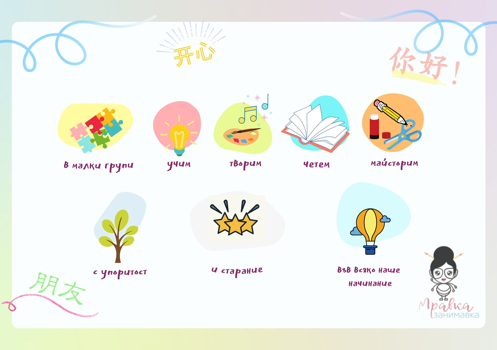

С Мравка Занимавка децата се докосват до китайския език и култура.

Заниманията са подходящи за деца на възраст 6-9 години и са с продължителност 90 минути.
С Мравка Занимавка децата се докосват до китайския език и култура.
Заниманията са подходящи за деца на възраст 6-9 години и са с продължителност 90 минути.
Успоредно с изучаването на йероглифи и правилното произношение на новите думи, творческите дейности, свързани със сензорната памет са силно застъпени тук.
Те играят важна роля в детското обучение и подпомагат паметта и концентрацията.